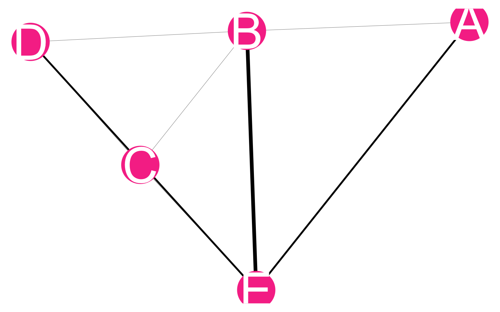

9 Data
9.0.1 MPX NYC spatial participant network
The MPX NYC spatial participant data network is a network object that contains all collected data. In this network, nodes comprise of community districts and survey participants. Edges can only exist between a person and a communtiy district - they indicate that the person either lives in or has a contact place in that community district. In Figure 9.1, participant nodes are blue and community district nodes are pink.
| name | type |
|---|---|
| 1 | person |
| 2 | person |
| 3 | person |
| 4 | person |
| 5 | person |
| 6 | person |
| 7 | person |
| 8 | person |
| A | community_district |
| B | community_district |
| C | community_district |
| D | community_district |
| E | community_district |
| from | to |
|---|---|
| 1 | A |
| 2 | A |
| 3 | A |
| 3 | B |
| 3 | E |
| 3 | E |
| 4 | B |
| 4 | C |
| 4 | D |
| 4 | E |
| 5 | C |
| 6 | D |
| 6 | E |
| 7 | C |
| 8 | C |
More formally, we define the MPX NYC spatial participant graph as
\[ G(N, \psi) \text{ where } \psi:N\times N \rightarrow \mathbb{N}_0 \]
\(N\) is a set containing node indices and \(\psi\) (the adjacency function for \(G\)) is a mapping from each possible pair of nodes to the set of non-negative integers. \(\psi(a,b) = 0\) when there is no edge between distinct nodes \(a,b \in N\) and \(\psi(a,b) > 0\) if there is. By definition, a node cannot have an edge with itself. i.e. \(\psi(a,a) = 0\) \(\forall a \in N\).
In the MPX NYC spatial participant graph, nodes can be partitioned into a set of study participants \(N_p\) and a set of community districts \(N_c\). i.e.
\[ N_p \cup N_c = N \text{ and } N_p \cap N_c = \emptyset \]
Each individual participant can have a relation with any number of community districts, but not with another participant. Similarly, each community district can have a relation with multiple participants, but not with another community district. i.e.:
\[ \psi(a,b) > 0 \Rightarrow a\in N_p, b\in N_c \] Finally, we define \(M\) as a \(q \times r\) weighted adjacency matrix for \(G\) where \(q = |N_p|\) and \(r = |N_c|\). The \(ij^{th}\) entry of \(M\) is
\[ m^{ij} = \psi(i,j) \]
In this mathematical description, we assume that there can only be one edge between a pair of nodes. In the MPX NYC data, it is possible for there to be more than one relation between a specific pair of nodes. We bridge this gap by assigning the count of relations in MPX NYC study data as an edge weight in the mathematical description. i.e In the case where participant \(a \in N_p\) has \(r\) relations with community district \(c \in N_c\), there is only one edge \((a,c)\) in \(G\) and the weight of that edge equals the count of relations (\(\psi(a,c) = r\)).
The MPX NYC spatial participant graph meets the definition for a bipartite graph. This allows us to easily derive two related graphs - the bipartite projection onto participant nodes \(G_p(N_p,\psi_p)\), and the bipartite projection onto community district nodes \(G_c(N_c,\psi_c)\). The former graph is used to represent the MPX NYC participant network, and the latter is used to represent the MPX NYC community district network. Both are defined below.
9.0.2 MPX NYC participant network
The MPX NYC participant network has participants as nodes. A pair of nodes is connected by a weighted edge if each of the individuals represented by the nodes has at least one contact venue or residence in the same, shared community district. The weight of the edge is given by the count of community districts the pair of nodes have in common. By definition, an edge of weight \(0\) is equivalent to the absence of an edge.

| name | type |
|---|---|
| 1 | person |
| 2 | person |
| 3 | person |
| 4 | person |
| 5 | person |
| 6 | person |
| 7 | person |
| 8 | person |
| from | to | weight |
|---|---|---|
| 1 | 2 | 1 |
| 1 | 3 | 1 |
| 2 | 3 | 1 |
| 3 | 4 | 3 |
| 3 | 6 | 2 |
| 4 | 5 | 1 |
| 4 | 6 | 2 |
| 4 | 7 | 1 |
| 4 | 8 | 1 |
| 5 | 7 | 1 |
| 5 | 8 | 1 |
| 7 | 8 | 1 |
More formally, we define the MPX NYC participant graph as
\[ G_p(N_p, \psi_p) \text{ where } \psi_p:N_p\times N_p \rightarrow \mathbb{N}_0 \]
\(N_p\) is a set containing node indices for participant nodes and \(\psi_p\) is a mapping from each possible pair of participants to the set of non-negative integers. \(\psi_p(a,b) = 0\) when there is no edge between distinct participants \(a\) and \(b\) and \(\psi_p(a,b) > 0\) if there is. By definition, a node cannot have a tie with itself. i.e. \(\psi_p(a,a) = 0\) \(\forall a \in N_p\).
\(G_p(N_p, \psi_p)\) can be derived from \(G\) by taking the product of the \(q \times r\) adjacency matrix \(M\) with its transpose:
\[ M_p = MM^T \]
The result is a \(q \times q\) adjacency matrix \(M_p\) whose entries \(m_p^{ij}\) are used to define \(\psi_p\):
\[ \psi_p(i,j) = m_p^{ij} \]
9.0.3 MPX NYC community district network
The MPX NYC community district network has community districts as nodes. A pair of community districts is connected by a weighted edge when at least one participant has a contact venue or residence in both community districts. The weight is the count of participants which are shared by the two community districts.

| name | type |
|---|---|
| A | community_district |
| B | community_district |
| C | community_district |
| D | community_district |
| E | community_district |
| from | to | weight |
|---|---|---|
| A | B | 1 |
| A | E | 2 |
| B | C | 1 |
| B | D | 1 |
| B | E | 3 |
| C | D | 1 |
| C | E | 1 |
| D | E | 2 |
More formally, we define the MPX NYC community district graph as
\[ G_c(N_c, \psi_c) \text{ where } \psi_c:N_c\times N_c \rightarrow \mathbb{N}_0 \]
where \(N_c\) is a set containing node indices for community district nodes and \(\psi_c\) is a mapping from each possible pair of community districts to the set of non-negative integers. \(\psi_c(a,b) = 0\) when there is no edge between community districts \(a\) and \(b\) and \(\psi_c(a,b) > 0\) if there is. By definition, a node cannot have a tie with itself. i.e. \(\psi_c(a,a) = 0\) \(\forall a \in N_c\).
\(G_c(N_c, \psi_c)\) can be derived from \(G\) by taking the product of the \(r \times q\) matrix \(M^T\) with its transpose:
\[ M_c = M^TM \]
The result is a \(r \times r\) matrix \(M_c\), whose entries \(m^{ij}_c\) are used to define \(\psi_c\):
\[ \psi_c(i,j) = m_c^{ij} \]